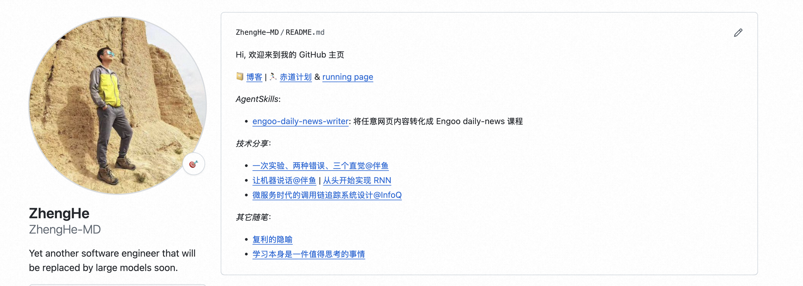

我的第一个 AgentSkill
我在 Cambly 和外教上课时，多数时候用的是 Engoo Daily News 中的课程（网站示例、课程示例）。每节课程对应一篇英文时事新闻，上课的一般流程就是：课前准备 → 文章阅读 → 问题讨论，同时每节课程都标记有难度，从 Intermediate (Level 4-6)、Advanced (Level 7-8) 到 Proficient (Level 9)，课程内容难度依次递增，具体体现在词汇难度、句子复杂度、讨论题型的设计和问题的抽象程度等等。
{kind=link}
{kind=link}
Engoo Daily News 的课程很好，但是许多文章内容我并不感兴趣，讨论起来稍显无趣，于是我萌生了一个想法：能不能我自己选一篇文章，让 AI 帮我生成指定难度的课程？
第一版：Agentic Workflow
最早我用 Claude Code 基于 LangGraph vibe-code 了一个生成课程的 Agentic Workflow (eslsoft/engoo-daily-news-writer)，生成的产物是 GitHub 上的 gist 文件，然后再用 gistpreview 渲染，就能上课在线使用了，示例见 agentic-workflow-version。这个版本看起来已经可以使用，但是有两个主要缺点：
- 上手门槛很高，只有「上外教课的程序员」能用起来，独乐不如众乐乐；
- 项目可维护性差，过一段时间就忘了代码结构，只能强行 vibe-code，心虚；
第二版：AgentSkill
第一版的问题一直萦绕在我心里，在春节期间终于得空思考。 降低上手门槛需要更通用的分发方案支撑，那基本逃不过 MCP 和 AgentSkill，甚至后者已经借着 OpenClaw 的爆火开始出圈。既然要降门槛，不如降到最低，于是我就选择了 AgentSkill。这时候发现，第二个问题也就迎刃而解了，项目的维护变成了 AgentSkill 的维护，作为作者的我不必再关心 LangGraph 会如何变化与演进。
基于上述思考，我便开始动手撰写「人生的第一个 AgentSkill」，名字不变：engoo-daily-news-writer。把初始的想法和计划告诉 skill-creator 后，我便有了一个 AgentSkill 的外壳，但要把它变得靠谱好用，难点在于：
- 如何拿到 Engoo Daily News 的课程设计规范
- 如何验证这个 AgentSkill 设计出来的课程质量
我将问题 1 交给了 Manus，当时使用的是 Manus 免费套餐中的 1.6 Lite，我在一段会话中循序渐进地问了这些问题：
- “read some articles from https://engoo.com/app/daily-news. and help me find out the average number of words of most daily-news.”
- “and also help me accurately describe each of the available difficulty levels (4-9) and corresponding differences in the article or the structure”
- “to give you some information, I’m writing a skill to generate engoo daily-news like articles.”
- “Dig deep into level 4, 5, 6, describe in details the structure of those lessons. And refine our current report. for each type of section, you should provide concrete examples”
花了几分钟时间，Manus 就给了我一份课程设计规范调研报告。于是生成课程的「形式」问题基本已经解决， 将报告发给 Claude Code，就得到了 SKILL.md 的主体内容。
问题 2 就得靠我这个作者的品味。我拿了一篇 Paul Graham 的 essay：Good Writings, 在通读一遍确保自己已了解文章的核心观点和表达细节后，开始让 Claude Code 依次生成 Level 4-9 的课程，然后逐个阅读，确认文章大意在不同难度的课程中是否不变，行文的阅读难度是否符合我平时上课的大致感受等等 （示例详见 good-writings-lesson-level-7)。我将一些建议给到 Claude Code，经过它的调整后，我的第一个 AgentSkill 就问世了。
接下来就需要解决它的分发问题，但在讨论分发前，我想聊聊最近经常和同事探讨的一个话题：「AgentSkill 究竟是跟着人走还是跟着角色走」。我的个人判断是，AgentSkill 一定会「跟着人走」，每个 AgentSkill 都或多或少地有作者本人品味的投影。比如，一个「Markdown 文件生成飞书文档」的 AgentSkill 中，就有很多无关正确性的设计选择：
- 类似 “> xxxx” 这样的引用语法应该转化成飞书文档中的引用块还是高亮块？
- 哪些类型的内容应该加粗加黑？
- 图片应该居中还是左对齐？
- 排版应该遵循什么样的原则？
它也许能够被那些还未锻炼出品味的人直接使用，但品味相当时，不同的使用者不可避免的会想去根据自己的喜好做一些微调。
既然是「跟着人走」，我就应该把具备我个人特色的 AgentSkill 放在 GitHub 主页上。我并不指望有多少人使用它，就像我主页上的代码仓库、分享、随笔一样，它体现的是我在这个世界中游历多年积累下来的品味，仅此而已。

找到了 AgentSkill 合适的归宿后，分发问题也就迎刃而解 — 利用 GitHub Actions 在项目 Releases 中放入 AgentSkills 的 zip，使用者下载后直接加载到 Claude Code、OpenClaw、Manus 等各种通用型 Agent 中即可。
尾声
完成 AgentSkill 的版本后，我在课上引导我的英语老师用 Manus 生成一份 Engoo Daily News 课程，当他看到结果后，说：「You should start your own Engoo business」。
LOL~